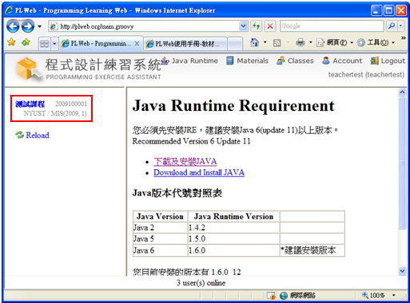
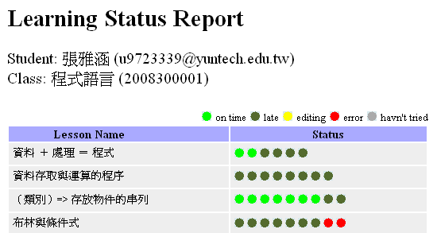
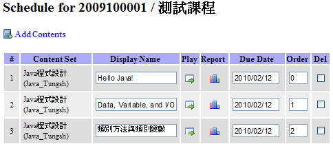
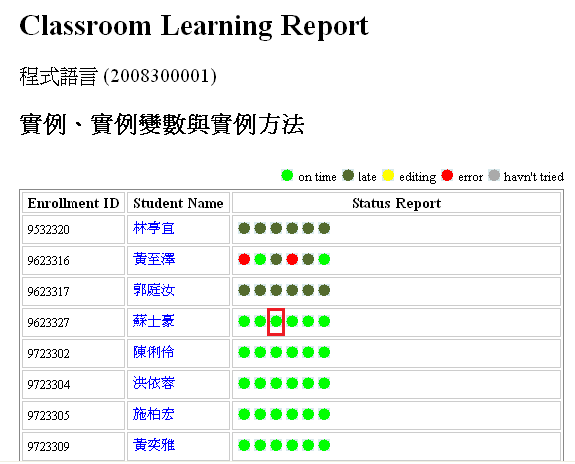
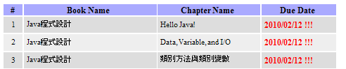
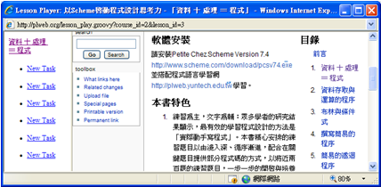
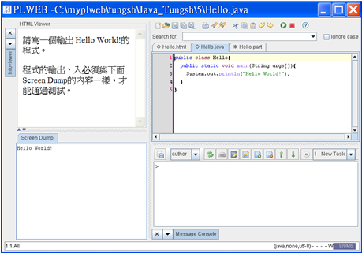

學生/老師登入系統並選擇左邊畫面中的課程：

選擇左邊畫面中的課程單元後即可看到：
畫面中按鈕的功用如下：
 ：顯示學生個人的答題狀況，可以藉由燈號顏色來瞭解學生的學習狀況。
：顯示學生個人的答題狀況，可以藉由燈號顏色來瞭解學生的學習狀況。

- ：這是教師才能看到的圖示，其功用是查看設定的繳交時間。

- ：這是教師才能看到的圖示，其功用是顯示全班的答題狀況。

在點選某一燈號後可以顯示那一題的學習歷程。下圖顯示了學生按  執行程式的幾個時間點及執行時的程式碼與測試資訊。
執行程式的幾個時間點及執行時的程式碼與測試資訊。

- ：查看此單元課程的截止日期。

 ：閱讀此單元的課程教材內容。
：閱讀此單元的課程教材內容。

 ：點選後會下載並開啟PLWeb編輯器，開始作答此單元的課程練習題。
：點選後會下載並開啟PLWeb編輯器，開始作答此單元的課程練習題。

- ：過了此單元課程的截止日期後，才會才能看到的圖示，可以透過PLWeb編輯器觀看此單元課程練習題的正確解答。